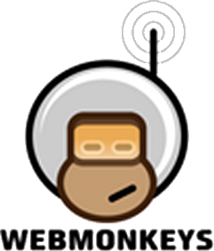
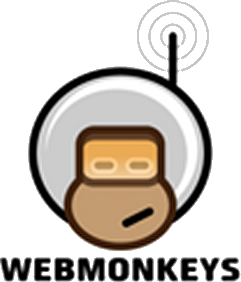
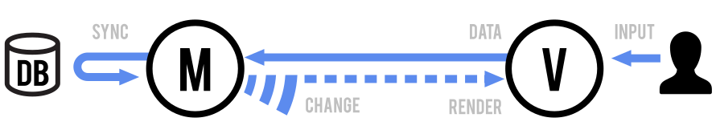
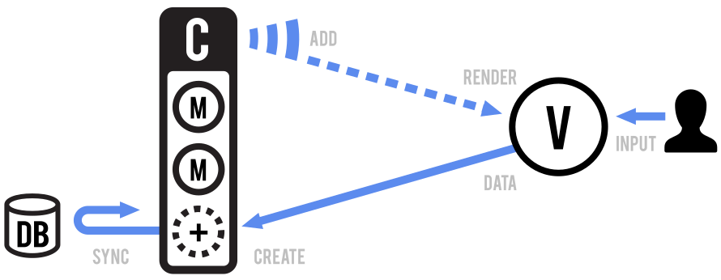
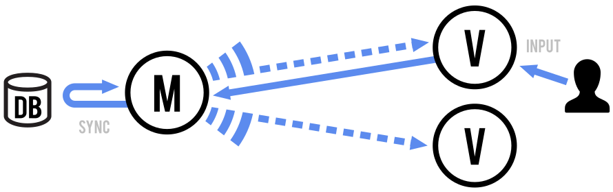

Intro to Backbone.js
Why and how to use one of the most popular front-end JavaScript libraries
ACM @ UIUC - WebMonkeys
Neelabh Gupta
October 26, 2015
 

Who am I?
- Computer Engineering, Class of 2015
- Several projects using a variety of languages, tools, frameworks
What is Backbone.js?
- Open source JavaScript library for front-end web apps
- Provides a backbone (structure) to JavaScript apps
- Rich API to handle
- CRUD
- RESTful JSON APIs
- Event handling
- Views
Last talk: Writing client-side applications
- Document: HTML
- Styling: CSS (Sass, LESS)
- Scripting: JavaScript (CoffeeScript, TypeScript)
- Tools (building, testing, deploying)
- Libraries (MVC frameworks, DOM libraries)
Last talk: Why use a framework?
- Help manage complexity and write organized, maintainable, reusable code
- Take care of common concerns (DOM, templates, routing, etc)
- Provide best-practices in the form of conventions
- MVC (or MVVM or MV*) helps prevent this
Why use Backbone.js?
- Library, not a framework
- Very popular and well liked
- Interoperable with other libraries
- Small - Easy to learn and understand (annotated source!)
Problems with Backbone.js
- Library, not a framework
- No out-of-the-box architecture
- Less opinionated
- Design designs up to user
- More time to bootstrap project
- Lacking view management
Backbone.js basics: Models and Views

Backbone.js basics: Collections

Backbone.js basics: View Rendering

Getting started: Hands-on